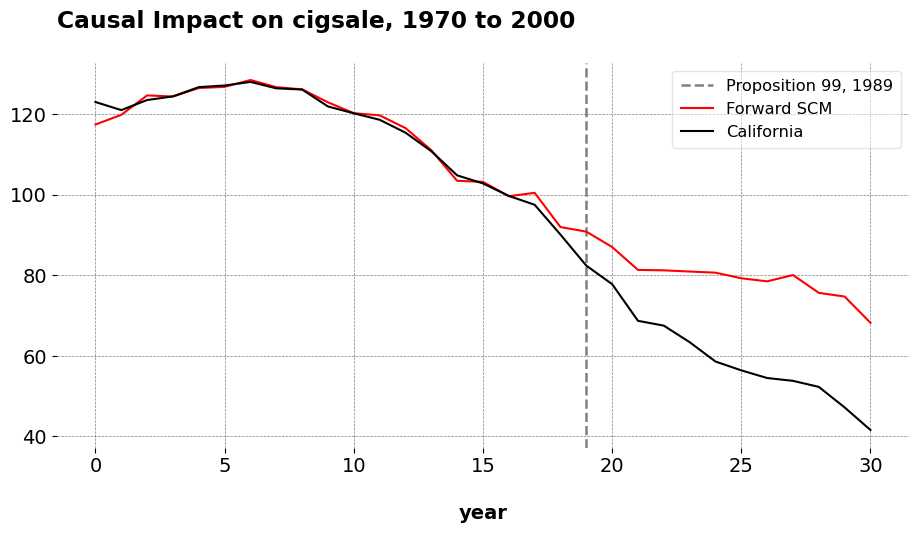

Interpolation bias is a known issue with synthetic control models (SCMs) For valid counterfactual prediction, the donor units, or the set of units that were never exposed to an intervention, should be as similar as possible to the treated unit in the pre-treatment periods. Selecting an appropriate donor pool is therefore critical, for practitioners. However, this can be challenging in settings with many potential controls, potentially many more control units than pre-treatment periods. Practically, researchers may wish to use this method when they have a high-dimensional donor pool and may be unsure as to which donors to include to reduce the impact of interpolation biases. To this end, this blog post introduces users the Forward Selected SCM. This applies Forward Selection (FS) to choose the donor pool for a SCM before estimating out-of-sample predictions.
Notation
Let \(\mathbb{R}\) denote the set of real numbers. A calligraphic letter, such as \(\mathcal{S}\), represents a discrete set with cardinality \(S = |\mathcal{S}|\). Let \(j \in \mathbb{N}\) represent indices for a total of \(N\) units and \(t \in \mathbb{N}\) index time. Let \(j = 1\) be the treated unit, with the set of controls being \(\mathcal{N}_0 = \mathcal{N} \setminus \{1\}\), with cardinality \(N_0\). The pre-treatment period consists of the set \(\mathcal{T}_1 = \{ t \in \mathbb{N} : t \leq T_0 \},\) where \(T_0\) is the final period before treatment. Similarly, the post-treatment period is given by \(\mathcal{T}_2 = \{ t \in \mathbb{N} : t > T_0 \}.\) The observed outcome for unit \(j\) at time \(t\) is \(y_{jt}\), where a generic outcome vector for a given unit in the dataset is \(\mathbf{y}_j \in \mathbb{R}^T\), where \(\mathbf{y}_j = (y_{j1}, y_{j2}, \dots, y_{jT})^\top \in \mathbb{R}^{T}\). The outcome vector for the treated unit specifically is \(\mathbf{y}_1\). The donor matrix, similarly, is defined as \(\mathbf{Y}_0 \coloneqq \begin{bmatrix} \mathbf{y}_j \end{bmatrix}_{j \in \mathcal{N}_0} \in \mathbb{R}^{T \times N_0}\), where each column indexes a donor unit and each row is indexed to a time period.
SCM estimates the counterfactual outcome for the treated unit by solving the program
We seek the weight vector, \(\mathbf{w}\), that minimizes the mean squared error between the treated unit outcomes and the weighted average of control units in the pre-treatment period. For our purposes, the space of SC weights is the \(N_0\)-dimensional probability simplex \(\Delta^{N_0} = \left\{ \mathbf{w} \in \mathbb{R}_{\geq 0}^{N_0} : \|\mathbf{w}\|_1 = 1 \right\}.\) Practically this means that the post-intervention predictions will never be greater than the maximum outcome of the donor pool or lower than the minimum outcome of the donor pool.
Forward SCM
Consider now a restricted donor pool chosen by FS. The donor pool chosen by FS consists of a subset of control units, \(\mathcal{S} \subseteq \mathcal{N}_0\), with cardinality \(k = |\mathcal{S}|\) where \(k \leq N_0\). This subset induces a sub-simplex of weights \(\Delta^{k}(\mathcal{S}) = \left\{ \mathbf{w}^\prime \in \mathbb{R}_{\geq 0}^{k} : \|\mathbf{w}^{\prime}\|_1 = 1 \right\}\). Researchers using FSCM do so presuming that some control units will be more relevant to the treated unit than others, such that some should be excluded from the estimation process entirely.
Step 1
FS proceeds over \(K \in \mathbb{N}\) iterations, builds a sequence of tuples, \(\mathbb{T} = \{(\mathcal{S}_K, \text{MSE}_K) \}_{K=1}^{N_0}\). The tuple contains two elements: the selected donor set for the \(K\)-th iteration and its corresponding \(\text{MSE}_K\) (or the pre-treatment mean squared error). We begin by minimizing the SCM objective function as above, cycling through each donor unit vector one at a time instead of using the full control group. We denote these as submodels, which returns \(N_0\) one unit SCM models. We choose the single donor unit (the nearest neighbor in this specific case) that minimizes the MSE among all the \(N_0\) submodels. Our first tuple, then, is built with this single donor unit and the model’s corresponding MSE
For \(K=2\), we now estimate \(N_0-1\) two-unit SCMs. We include the originally selected donor along with the remaining controls, one remaining donor at a time. As above, the first and second elements of the second tuple, respectively, are
as the optimal donor set, \(\mathcal{S}^{\ast}\). Note that even within \(\mathcal{S}^{\ast}\) (as we will see below), some donors may receive zero weight in the final solution. The selected donors are just the units selected for inclusion in the donor pool in the first place, they are no guarantee of the unit having positive weight. This is in contrast to methods such as Forward Difference-in-Differences or the FS panel data method. Both of these designs are available in mlsynth too, in the FDID class and PDA class with the method of fs (the default). The main difference here is that FDID can never overfit because it estimates only one parameter, whereas (in theory) FSCM and fsPDA can overfit if they end up including too many parameters in the regression model. Unclear how likely this is, since as we see below, teh FS method reduces the full donor pool to just under half of the originally selected donor units.
FSCM in mlsynth
Now I will give an example of how to use FSCM for your own applied work. As ususal, in order to properly implement this, we begin by installing mlsynth from my Github
And then we load the Proposition 99 dataset and fit the model in the ususal mlsynth fashion. As per the ususal, we have a single unit name column which has the names of the donors, a time column (the year in this case), a numeric outcome column, and an indicator column which denotes the treatment when it is active and the unit is the name of the treated unit, else 0.
import pandas as pd # To work with panel datafrom IPython.display import display, Markdown # To create the tablefrom mlsynth.mlsynth import FSCM # The method of interesturl ="https://raw.githubusercontent.com/jgreathouse9/mlsynth/refs/heads/main/basedata/smoking_data.csv"# Feel free to change "smoking" with "basque" above in the URLdata = pd.read_csv(url)# Our method inputsconfig = {"df": data,"outcome": data.columns[2],"treat": data.columns[-1],"unitid": data.columns[0],"time": data.columns[1],"display_graphs": True,"save": False,"counterfactual_color": "red"}arco = FSCM(config).fit()

After estimation, we can get the weights into a table like
These are the weights for all 17 units that were selected by the algorithm. As we can see, all of these even did not ultimately contribute to the SC, with only 6 being assigned positive weight. The ATT of Prop 99 as estimated by FSCM is -19.51 and the pre-treatment Root Mean Squared Error for FSCM is 1.66. I compared these results to the same results we get in Stata, which includes the covariates that Abadie, Diamond, and Hainmuller originally adjusted for as well as customizes the period over which to minimize the MSE. The ATT using the original method is -19.0018, and the RMSE for the pre-treatment period is 1.76. The corresponding weights using the full donor pool are 0.334 for Utah, 0.235 for Nevada, 0.2020 for Montana, Colorado 0.161, and Connecticut 0.068. So as we can see, the ATTs are very similar, and the pre-treatment prediction errors are pretty much the same. When we estimate this in Stata (omitting the auxilary covariate predictors and estimate synth2 cigsale cigsale(1988) cigsale(1980) cigsale(1975) , trunit(3) trperiod(1989) xperiod(1980(1)1988) nested fig, we get a RMSE of 4.33 and an ATT of -22.88. Furthermore, with this specification, the weights are no longer a sparse vector.
The point of this article is very simple. The original SCM works well, however it can be very sensitive to the inclusion of covariates, which covariates are included, what their lags are, and so on and so forth. Furthermore, there is also an issue of covariate selection in settings where we have multiple covariates that can potentially inform our selection of the donor pool. Furthermore, collecting a rich list of covariates may also not be possible in some settings. In such situations, especially without some pre-existing grount truth donor pool, analysts may apply the FSCM algorithm to guard against interpolation biases.
At least with the California example (and West Germany and Basque datasets, which I also tested), we can sometimes get comparable results to the baseline estimates which used multiple covariates for acceptable results (in all three of the standard test cases, FSCM actually get lower MSE than the original applications). In the Proposition 99 example, we select some of the same donor units, get a slightly better MSE and a very similar ATT without needing to fit to the covariates originally specified in the JASA paper.
The promise of machine-learning methods in this space is to automate away donor/predictor selection to some acceptable degree. The key thing of interest (for me, from an econometric theory perspective anyways) is which methods are best suited for this task, when do they perform well, and why. For example, it might be useful to derive bias bounds for this estimator to quantify how much the MSE should improve by compared to the original SCM and Forward DID, as has been done with clustering based methods, for example.
A final caveat: in the original paper, Giovanni uses cross-validation to estimate this model, and he also employs the same covariates. I have not done the cross validation yet on my end, but I will very soon. As ususal, email me with questions or comments.